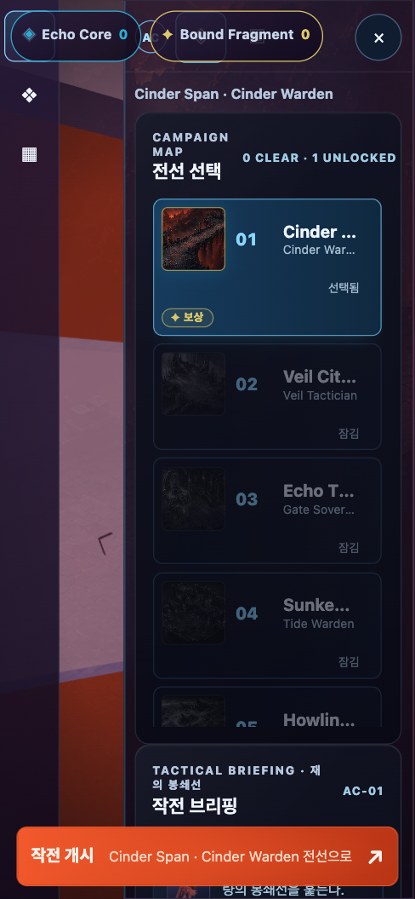
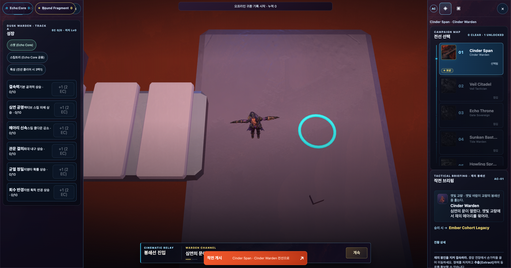
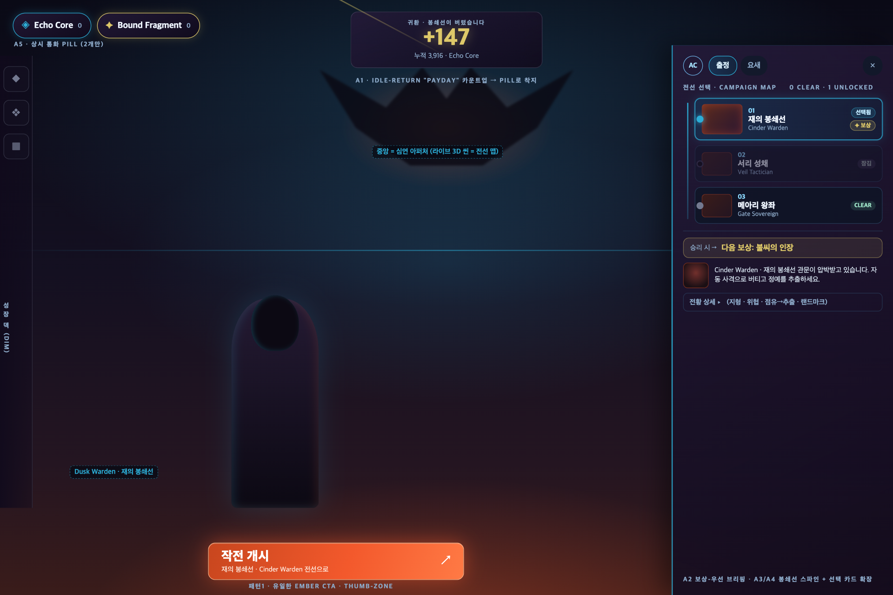
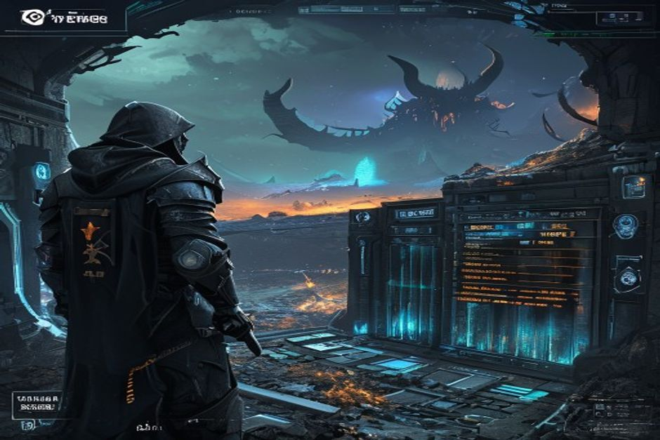

조사(브라우저 웹게임 아웃게임 레퍼런스 + 12개월 웹서치 보강) → 회의(designer·ui·programmer 포지션 수렴) → 프레젠테이션 스펙 → 구현. 기존 좌/우 독 구조 위에 값싼 연출 + 가독성을 얹어 "폼"이 아니라 "심연을 향한 워룸"으로 만드는 7개 변경.
app.js +198 −12styles.css +1542 files · +282 −11검증: 유닛/CI 회귀 진행 중직접 브라우저 확인 ✓ 390 · 2056 · reduced-motion
한눈에 — 실제 구현 화면
아래는 개념 목업이 아니라 지금 빌드에서 실제로 렌더된 로비입니다.

LIVE모바일 390×844 — 좌상단 2개 통화 pill, 봉쇄선 스파인 스테이지 레일, 선택 카드 확장 + ✦보상 칩, 하단 ember 작전 개시

LIVE와이드 2056×1082 — 좌 성장 덱 + 중앙 라이브 3D 심연 + 우 전황 덱, 양쪽 독 cyan 씸(seam), "승리 시 → Ember Cohort Legacy" 골드 헤드라인
바뀐 것 7가지
각 항목 = 결정된 방향(회의록) · 채택 패턴 · Before → After · 파일.
1
A6 · 아퍼처 프레이밍
독이 라이브 씬에서 "떨어져 나온" 것처럼
Before · 글래스 독이 캔버스 위에 그냥 얹혀 있음(붙어있는 느낌 없음)
After · 캔버스와 맞닿는 독 가장자리에 정적 1px cyan-rift 씸 — 씬에서 emit된 것처럼 읽힘 (per-frame 비용 0)
규칙 · 골드 = 보상/payday 숫자에만(BF pill·보상 헤드라인·보상 칩·카운트업) · ember = 커밋 CTA + 심연 열기에만 · cyan = 월드/씸/선택 · void-obsidian/cold-steel = 크롬. 최종 diff 감사 통과
cross-cutting · 최종 diff 팔레트 감사
개념 → 결과
회의에서 결정한 방향(스키매틱/무드)과 실제 구현이 어떻게 맞는지.

개념레이아웃 스키매틱 — 결정된 7항목의 정확한 배치/라벨 레퍼런스(직접 HTML)

무드분위기 렌더(Pollinations flux) — 심연 아퍼처 톤/조명. UI 텍스트는 부정확(분위기용)LIVE실제 구현 결과 — 스키매틱 방향 그대로 라이브 3D 씬 위에 구현
범위/안전 · 이번 Pass 1은 app.js + styles.css (프레젠테이션 레이어)만 변경 — 시뮬레이션/규칙/카탈로그/렌더러 모듈은 손대지 않음. 라이브 캔버스는 로비에서도 이미 60Hz로 그려지므로 sim JS 예산은 놀고 있어, 모든 연출은 compositor-thread transform/opacity + 자기종료 카운트업 + 풀드 파티클로 값싸게. 신규 blur/three.js VFX/parallax는 이번 패스에서 보류. 모든 애니메이션은 reduced-motion resting state 보유(G4).
보류(기록됨) · 스테이지 선택 시 씬 리틴트, 카메라 연동 parallax, gacha/리빌 극장, 적응형 오디오, prestige-reset, 데일리 로그인, 알림 뱃지 — recordFrameProbe 검증과 함께 다음 패스에서.